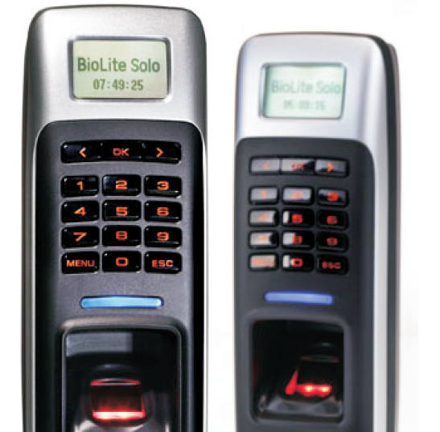

Introducing the country’s most advanced Access Control System
Employees, staff, clients, deliverymen, couriers... these days, it’s hard to keep track of people on your premises. Security guards do their best to check records and credentials, but there’s always a chance of a security breach. With so many people coming and going, restricted areas can be easily accessed, important documents and material copied and goods and expensive equipment can be stolen. What’s more, guards and people can even be bribed to let an unauthorised person enter.
To make matters worse, shift duties add to the confusion. And valuable man-hours are spent on registers, records and overall attendance.
The need of the hour is a system that grants access to only authorised personnel. A system thatis intelligent enough to differentiate one employee from the other, add layers of access control and even track and monitor attendance.
Ceasefire brings you just a system – the Ceasefire Access Control System, the most advanced in the country.
Why Ceasefire Access Control

At Ceasefire, we believe in looking into the future and being in control. Looking every threat in the eye and producing a weapon so powerful and advanced, it wipes out every trace of danger. Because we believe that if nothing is left to chance, nothing can possibly go wrong. Which is why we’ve designed the Ceasefire Access Control System - a system that allows you full control. Produced to our exacting standards in terms of quality, design and performance, in some of the world’s leading manufacturing facilities, this top-of-the-line range is a system like no other. It’s designed to present trespassers with complex layers of security they haven’t even heard of, much less experienced. From password and PIN protected doors to biometric ID restricted areas, the Access Control System guarantees complete protection. In other words, it chooses who can gain access and who can’t, while performing all the duties of a time-keeper, attendance monitor and salary manager. It records, tracks and reports 24x7.
How the Ceasefire Access Control System works

An access control point can be a door, turnstile, parking
gate, elevator, or other physical barrier where granting
access can be electronically controlled.
Access control can contain several elements. At its most
basic, is a standalone electric lock, which is unlocked by an
operator with a switch. To automate this, operator
intervention is replaced by a reader. Readers could be a
keypad where a code is entered, a card reader, or a
biometric reader. Readers then send the card number to
an access control panel that verifies the number against an
access list.
To monitor the door position, magnetic door switches are
used. Generally only entry is controlled. In cases where the
exit is also controlled, a second reader is installed on the
other side of the door. In cases where exit is not controlled,
a device called request-to- exit (RTE) is used.
Request-to-exit devices can be a push-button or a motion
detector. When the button is pushed or the motion detector
detects motion at the door, the door alarm is temporarily
ignored while the door is opened.
All access door hardware is connected directly
to intelligent or semi-intelligent readers. Readers usually do
not make access decisions, and forward all requests to the
main controller.
Only in the event that the connection to the main controller is
unavailable, the readers use their internal database to make
access decisions and record events. Semi-intelligent readers
that have no database and cannot function without the main
controller should be used only in areas that do not require
high security. Main controllers usually support 16 to 64
readers.
The Ceasefire Access Control System also makes for the
perfect attendance record-keeper. Loaded with face
recognition, access card entry and supreme SFM fingerprint
modules designed to provide biometric security, the
Ceasefire Access Control System gives a powerful
verification performance that wipes out the possibility for any
proxy attendances. Also, with its easy integration with various
other external databases, other functions like work-hour
calculation and salary calculation become an easy task.